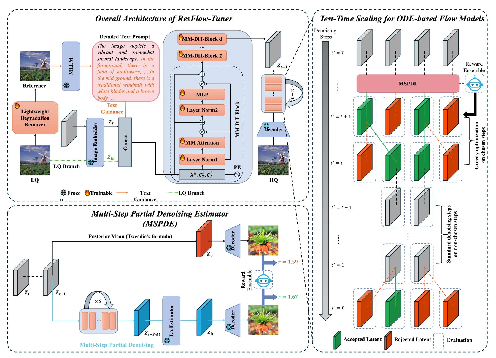
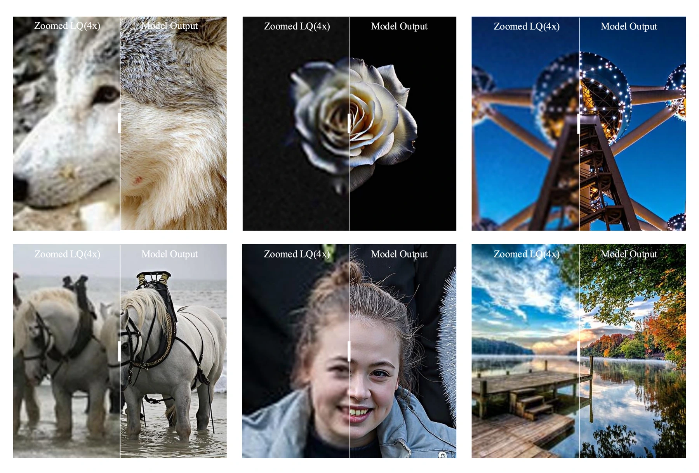

A text-to-image diffusion model contains an enormous amount of knowledge about what images look like. Using one for restoration means overriding that knowledge with a specific damaged input: the prior must generate, but it must generate this photograph.
文生图扩散模型中包含着海量关于图像应当长什么样的知识。把它用于恢复，意味着要用一张特定的受损图像去覆盖这些知识：先验必须去生成，但必须生成的是这一张照片。
Two problems have to be solved and they are usually conflated. The model has to receive the degraded image and any semantic context in a form it can condition on, and it has to be steered toward a reconstruction rather than toward a generic plausible image. The first is architectural; the second is an inference-time question.
需要解决两个问题，而它们常被混为一谈。模型必须能以一种可条件化的形式接收退化图像与语义上下文；同时它必须被引导至一次重建，而不是被引导至一张泛泛的合理图像。前者是架构问题，后者是推理阶段的问题。
ResFlow-Tuner, built on FLUX.1-dev, keeps them apart. Unified multimodal fusion handles conditioning, and a training-free test-time scaling procedure uses reward feedback to adjust the denoising direction during inference. On LSDIR-Val the scaling step alone moves LPIPS from 0.4015 to 0.3721 and FID from 22.91 to 19.82.
基于 FLUX.1-dev 的 ResFlow-Tuner 把两者分开：统一多模态融合负责条件注入，一个免训练的测试时扩展流程则在推理时用奖励反馈调整去噪方向。在 LSDIR-Val 上，仅扩展这一步就把 LPIPS 从 0.4015 降到 0.3721、FID 从 22.91 降到 19.82。
Conditioning and steering are separated: unified multimodal fusion places the low-quality image and text in one sequence for the MM-DiT, while a training-free test-time scaling step steers denoising with reward-model feedback.
条件注入与方向引导被分开处理：统一多模态融合把低质图像与文本放进 MM-DiT 的同一个序列，而免训练的测试时扩展则用奖励模型反馈引导去噪方向。
The budget is a dial, not a setting: with K=4 and N=7 on LSDIR-Val, LPIPS falls from 0.4015 to 0.3721, FID from 22.91 to 19.82 and MUSIQ rises from 71.47 to 74.21.
预算是可调的旋钮而非固定设置：在 LSDIR-Val 上取 K=4、N=7，LPIPS 从 0.4015 降到 0.3721，FID 从 22.91 降到 19.82，MUSIQ 从 71.47 升到 74.21。
Because nothing is retrained, the same weights serve a latency-sensitive and a quality-sensitive path — the trade is per-input compute instead of one committed model.
由于无需重训，同一份权重既能服务延迟敏感路径也能服务质量敏感路径——代价是按输入计算，而不是锁定某一个模型。
Conditioning the prior, then steering it先给先验条件，再引导它的方向
FLUX.1-dev is a multi-modal diffusion transformer: text and image tokens already live in one sequence. Unified multimodal fusion exploits that by encoding the degraded image and the semantic condition into the same shared sequence, so the transformer attends across both rather than receiving the image through a side adapter.
FLUX.1-dev 是一个多模态扩散 transformer：文本与图像 token 本来就在同一个序列里。统一多模态融合利用了这一点，把退化图像与语义条件编码进同一条共享序列，于是 transformer 在两者之间做注意力，而不是通过旁路适配器接收图像。
Why it matters: an adapter path forces the condition to compete with the model’s own prior at a fixed strength. Putting the condition inside the sequence lets attention decide, at every layer, how much the degraded observation should constrain generation.
为什么重要：适配器路径迫使条件以固定强度与模型自身的先验竞争。把条件放进序列内部，则让注意力在每一层自行决定退化观测应当在多大程度上约束生成。
The second half happens at inference and needs no training. A reward model scores intermediate candidates and that signal adjusts the denoising direction. Nothing about FLUX changes; what changes is how much computation is spent searching among trajectories the model already supports.
第二部分发生在推理阶段，且不需要训练。奖励模型对中间候选打分，该信号用于调整去噪方向。FLUX 本身没有任何改变；改变的是花多少计算量在模型本来就能支持的那些轨迹中搜索。


Spending compute where it pays把计算花在有用的地方
Test-time scaling reframes restoration as an allocation problem. Each input receives a budget, and the budget buys additional candidate trajectories that are scored and pruned instead of a single uncontrolled sample.
测试时扩展把恢复重述为一个分配问题。每个输入获得一份预算，预算换来的是若干被打分与剪枝的候选轨迹，而不是一次不受控的采样。
That is a different trade from training a larger model. Training cost is paid once and applies to every input; test-time compute is paid per input, so it can be spent unevenly — heavily on a difficult photograph, barely on an easy one — which is the right shape for a restoration service with a long tail.
这与训练更大的模型是不同性质的取舍。训练成本只付一次且作用于所有输入；测试时计算是按输入付的，因此可以花得不均匀——困难的照片多花，简单的照片几乎不花——这正符合一个长尾分布恢复服务应有的形态。
The ablations therefore separate the design choices rather than reporting only a final configuration: how the low-quality image and text are fused, which reward signals steer the process, and how much compute is spent. Varying the budget is the part that matters most for anyone deciding whether to adopt it.
因此消融把各项设计选择分开，而不是只报一个最终配置：低质图像与文本如何融合、用哪些奖励信号引导、以及花多少计算。对任何决定是否采用它的人来说，改变预算是最关键的那一项。
What the scaling buys扩展换来了什么
On LSDIR-Val, going from no test-time scaling to K=4 and N=7 improves LPIPS from 0.4015 to 0.3721 and FID from 22.91 to 19.82, with MUSIQ rising from 71.47 to 74.21. LPIPS and FID moving together is the informative part: the output is closer to the reference and drawn from a distribution closer to real images.
在 LSDIR-Val 上，从不做测试时扩展到取 K=4、N=7，LPIPS 从 0.4015 改善到 0.3721，FID 从 22.91 降到 19.82，MUSIQ 从 71.47 升到 74.21。LPIPS 与 FID 同时改善是最有信息量的部分：输出既更接近参考，也来自一个更接近真实图像的分布。
These gains are not free, and the paper reports the price rather than hiding it. The improvement is bought with additional sampling and reward evaluations per input; the method is tunable, which is the point rather than a caveat.
这些收益并非免费，论文也报出了代价而非遮掩。改善是用每次输入额外的采样与奖励评估换来的；该方法可调，这是它的要点，而不是它的缺陷。
OCR evaluation is the check that keeps the numbers honest. Text is where the difference between sharper and more correct is observable: a reconstruction can render crisper glyphs that read as different characters. If OCR accuracy improves alongside LPIPS, the detail being added is real rather than decorative.
OCR 评测是让这些数字保持诚实的检验。文字正是“更锐利”与“更正确”之别可被观测的地方：一次重建可以渲染出更清晰的字形，却读成了别的字符。若 OCR 准确率与 LPIPS 一同改善，说明被加入的细节是真实的，而非装饰性的。


A dial, not a promise一个旋钮，而不是一句承诺
The useful reading is that inference compute becomes a controllable parameter of a restoration system. A batch pipeline can spend a large budget and an interactive one can spend almost none, using the same weights.
有益的解读是：推理计算成了恢复系统中一个可控的参数。离线批处理可以花很大预算，交互式场景几乎不花，而用的是同一份权重。
The limitation sits in the reward model. Steering optimises whatever the reward can measure, so a reward that favours sharpness will trade fidelity for sharpness exactly as a hand-designed loss would. The reward choice is not a neutral implementation detail; it is where the method’s values are set.
局限落在奖励模型上。引导只会优化奖励能测到的东西，因此一个偏好锐利度的奖励，会像手工设计的损失一样拿保真度去换锐利度。奖励的选择不是一个中性的实现细节，而是这个方法价值取向被设定的地方。
That is why the ablations matter more than the headline. They support a tunable method whose quality depends on the reward and the budget, not an unconditional claim that more inference always yields a better reconstruction. Anyone deploying it should re-measure the reward’s behaviour on their own degradation distribution.
正因如此，消融比头条数字更重要。它们支持的是一个质量取决于奖励与预算的可调方法，而不是“更多推理必然带来更好重建”的无条件论断。任何要部署它的人，都应在自己的退化分布上重新测量该奖励的行为。
Paper & authors
ECCV 2026
Cite this work
@misc{bai2026tuningrealworldimagerestoration,
title = {Tuning Real-World Image Restoration at Inference: A Test-Time Scaling Paradigm for
Flow Matching Models},
author = {Purui Bai
and Junxian Duan
and Pin Wang
and Jinhua Hao
and Ming Sun
and Chao Zhou
and Huaibo Huang},
year = {2026},
eprint = {2603.22027},
archivePrefix = {arXiv},
primaryClass = {cs.CV},
url = {https://arxiv.org/abs/2603.22027}
}